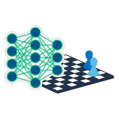
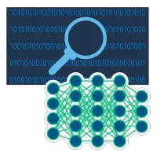

Artificial intelligence, or AI, is the idea of enabling machines to perform tasks that normally require human intelligence. That includes developing algorithms that can process data, learn from it, and make decisions. AI has a wide range of applications, from virtual assistants to self-driving cars, and the field continues to evolve.
Types of AI
Artificial Intelligence encompasses a spectrum of capabilities, ranging from specialized task execution to human-like cognitive abilities:
-
Narrow/Weak AI
Narrow AI, often known as Weak AI, is designed to excel in specific tasks within a limited domain. These AI systems exhibit exceptional proficiency in their assigned tasks but lack general cognitive abilities. Examples include voice assistants like Siri, which can understand and respond to voice commands, or virtual chess players that can analyze complex game positions and make optimal moves.
-
General/Strong AI
General AI, or Strong AI, aims to replicate the comprehensive cognitive abilities of humans. This type of AI can understand, learn, and adapt across a broad range of domains, similar to human intelligence. While Narrow AI excels in specialized tasks, achieving General AI remains a complex challenge. It requires machines to possess not only the ability to perform tasks but also to understand context, think abstractly, and even experience emotions.
These distinct types of AI underscore the evolution of artificial intelligence, from specialized problem solvers to potential companions with human-like cognitive prowess.
History of AI
Emerging in the 1950s, AI aimed to replicate human-like intelligence in machines. Early pioneers like Alan Turing and John McCarthy laid the groundwork, introducing the concept of machines mimicking human thinking. The Dartmouth Workshop in 1956 marked the formal beginning of AI as a field.
The 1960s and 1970s brought enthusiasm for AI research, but challenges in solving complex problems and understanding natural language led to the first "AI winter" of reduced funding and optimism. The 1980s and 1990s shifted focus to knowledge-based and expert systems, yet limitations in handling uncertainty persisted, leading to another "AI winter."
The 2000s witnessed an AI resurgence, driven by machine learning breakthroughs. Neural networks enabled learning from data and led to advancements in natural language processing and computer vision. Recent years brought the rise of deep learning, revolutionizing image recognition, language translation, and more. AI now impacts diverse industries, from healthcare to entertainment.

1950s-1970s
Neural Networks
Early work with neural networks stirs excitement for “thinking machines.”
1980s-2010s
Machine Learning.
Machine learning becomes popular.

Present Day
Deep Learning
Deep learning breakthroughs drive AI boom.
Applications of AI
Artificial Intelligence has permeated various industries, revolutionizing the way we approach challenges and capitalize on opportunities:
-
Natural Language Processing (NLP)
AI's prowess in understanding and generating human language has led to the advancement of Natural Language Processing. This technology enables chatbots to engage in natural conversations, language translation services to bridge communication gaps, sentiment analysis to gauge public opinion, and text summarization for efficient content digestion.
-
Computer Vision
Computer vision empowers AI to process and interpret visual information from images and videos. This has facilitated remarkable breakthroughs in facial recognition technology, enabling personalized user experiences and enhanced security measures. Object detection algorithms enable the automation of tasks such as inventory management and autonomous vehicles.
-
Machine Learning
Machine learning, a subset of AI, fuels the development of predictive models and decision-making systems. From personalized recommendation engines driving online shopping experiences to fraud detection algorithms safeguarding financial transactions, machine learning is at the core of data-driven insights that power modern businesses.
-
Robotics
AI-driven robots are reshaping industries and augmenting human capabilities. In manufacturing, robots perform repetitive tasks with precision and efficiency. In healthcare, robotic systems assist surgeons in delicate procedures and provide companionship to the elderly. Exploration in challenging environments, such as space or hazardous terrains, is also facilitated by intelligent robotic systems.
-
AI in Healthcare
The synergy between AI and healthcare is transforming patient care. AI-powered medical imaging analysis aids in early disease detection. Drug discovery processes are expedited through AI-driven simulations. Personalized treatment plans are designed based on patients' unique genetic profiles, enhancing treatment outcomes and reducing healthcare costs.
-
AI Ethics
As AI's impact grows, discussions about ethical considerations intensify. Developers and researchers are working to address issues related to bias in AI algorithms, data privacy, transparency, and accountability. Building responsible AI systems that align with societal values is an ongoing endeavor.
The applications of AI are as diverse as they are transformative, reshaping industries and enriching our lives in ways we once deemed futuristic.
How AI Works
AI works by combining large amounts of data with fast, iterative processing and intelligent algorithms, allowing the software to learn automatically from patterns or features in the data. AI is a broad field of study that includes many theories, methods and technologies, as well as the following major subfields:
-
Machine learning automates analytical model building. It uses methods from neural networks, statistics, operations research and physics to find hidden insights in data without explicitly being programmed for where to look or what to conclude.
-
A neural network is a type of machine learning that is made up of interconnected units (like neurons) that processes information by responding to external inputs, relaying information between each unit. The process requires multiple passes at the data to find connections and derive meaning from undefined data.
-
Deep learning uses huge neural networks with many layers of processing units, taking advantage of advances in computing power and improved training techniques to learn complex patterns in large amounts of data. Common applications include image and speech recognition.
-
Computer vision relies on pattern recognition and deep learning to recognize what’s in a picture or video. When machines can process, analyze and understand images, they can capture images or videos in real time and interpret their surroundings.
-
Natural language processing (NLP) is the ability of computers to analyze, understand and generate human language, including speech. The next stage of NLP is natural language interaction, which allows humans to communicate with computers using normal, everyday language to perform tasks.
Additionally, several technologies enable and support AI:
-
Graphical processing units are key to AI because they provide the heavy compute power that’s required for iterative processing. Training neural networks requires big data plus compute power.
-
The Internet of Things generates massive amounts of data from connected devices, most of it unanalyzed. Automating models with AI will allow us to use more of it.
-
Advanced algorithms are being developed and combined in new ways to analyze more data faster and at multiple levels. This intelligent processing is key to identifying and predicting rare events, understanding complex systems and optimizing unique scenarios.
-
APIs, or application programming interfaces, are portable packages of code that make it possible to add AI functionality to existing products and software packages. They can add image recognition capabilities to home security systems and Q&A capabilities that describe data, create captions and headlines, or call out interesting patterns and insights in data.
In summary, the goal of AI is to provide software that can reason on input and explain on output. AI will provide human-like interactions with software and offer decision support for specific tasks, but it’s not a replacement for humans – and won’t be anytime soon.